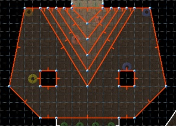
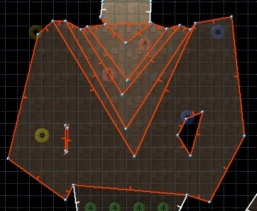
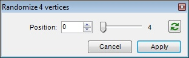
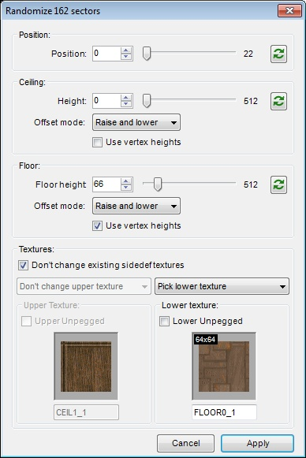
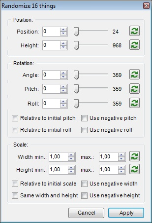

随机化模式可用于为任意类型的选区添加一定的随机性，这在创建自然（洞穴）或扭曲的环境（CAVES IN HELL！！！）时很有帮助。
菜单路径： Mode -> Randomize。
动作类别： Transform。
默认按键： Ctrl-J。
| 处理前： | 处理后： |
 |
 |
该功能可应用于经典模式和视觉模式下的任意类型选区。
根据选区类型的不同，可以使用不同的设置组合：
当在顶点或线段模式下选中顶点或线段，或在视觉模式下只选中墙面时，你会看到：

当在扇区模式下选中扇区，或在视觉模式下选中地板或天花板时，你会看到：

当在物件或视觉模式下选中物件时，你会看到：

你可以使用 按钮来为给定属性更新随机值。